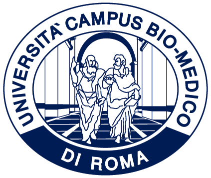
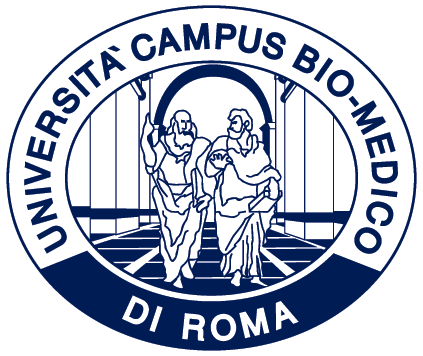

Benvenuto a Ital-IA 2026!
Ital-IA 2026 è il sesto Convegno Nazionale CINI sull'Intelligenza Artificiale, organizzato per sviluppare obiettivi comuni tra istituzioni pubbliche, industria italiana e la ricerca scientifica delle università e dei centri di ricerca nazionali. Ital-IA ha l'ambizione di "fare rete nazionale" tra tutte le azioni che si stanno disegnando in questi mesi in Italia per cogliere le potenzialità di sviluppo legate alle tecnologie dell'Intelligenza Artificiale.
Il convegno è organizzato dal Laboratorio Nazionale "Artificial Intelligence ed Intelligent Systems" (AIIS), dal CINI (Consorzio Interuniversitario Nazionale per l'Informatica) e dall'Università Campus Bio-Medico di Roma.
Save the date
Ital-IA Workshop tematici: 18 Giugno 2026
Ital-IA Convegno plenario: 19 Giugno 2026
Workshops Tematici
| AI Responsabile e Affidabile |
|---|
| AI per la Sostenibilità |
| AI per la Pubblica Amministrazione |
| AI per la Medicina e la Salute |
| AI per l'Industria |
| AI per la Cybersecurity |
| AI per la Robotica |
| AI Generativa |
Ital-IA e Summer School on Artificial Intelligence in Health and Life Science
L’edizione 2026 di Ital-IA si svolgerà in conjunction con la Summer School on Artificial Intelligence in Health and Life Science 2026, che avrà luogo dal 15 al 19 giugno 2026. La Summer School fa parte integrante del Dottorato Nazionale in Intelligenza Artificiale, offre una formazione intensiva sulle frontiere dell’AI applicata alla medicina e alle scienze della vita, rivolta a studenti, ricercatori e professionisti, favorendo il confronto con esperti internazionali e il collegamento tra ricerca avanzata e applicazioni reali.
La partecipazione alla Summer School include automaticamente l’accesso a Ital-IA 2026.

Organizzato da

 

Sponsor
(in aggiornamento)
Contatti
Per domande di carattere scientifico, si prega di contattare i coordinatori dell’evento Paolo Soda e Valerio Guarrasi agli indirizzi: p.soda@unicampus.it e valerio.guarrasi@unicampus.it
Per domande di carattere amministrativo, si prega di contattare la UCBM Academy all’indirizzo: ucbmacademy@unicampus.it
News
Call for Papers
Scadenza invio contributi: 9 maggio 2026.
Dettagli e linee guida nella pagina CfP.
Registrazione
Quota 240€, include workshop e plenarie (coffee break e pranzi). Link di registrazione in arrivo.